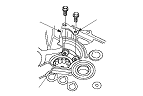
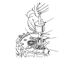
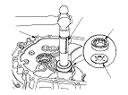
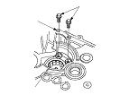

Sostituzione cuscinetto contralbero scatola frizione M/T
Attrezzi speciali richiesti
Testa estrattore regolabile per cuscinetti, 20−40 mm
07JAC-PH80100
Albero estrattore per cuscinetti
07JAC-PH80200
Contrappeso maglio a corsoio
07741-0010201
Inseritore per paraolio, 65 mm
07JAD-PL90100
Rimuovere la piastra di appoggio (A) del cuscinetto dalla scatola della frizione (B).

Rimuovere il cuscinetto ad aghi (A) utilizzando la testa estrattore regolabile per cuscinetti da 20−40 mm (B), il contrappeso (D) del martello scorrevole e l'albero estrattore per cuscinetti (E), quindi rimuovere la piastra guida olio C.

Posizionare la piastra guida olio C e un nuovo cuscinetto ad aghi (A) nel foro nella scatola della frizione (B).
Installare il cuscinetto ad aghi utilizzando l'inseritore per paraolio da 65 mm (D).

Installare la piastra di appoggio (A) del cuscinetto con i bulloni (B).
